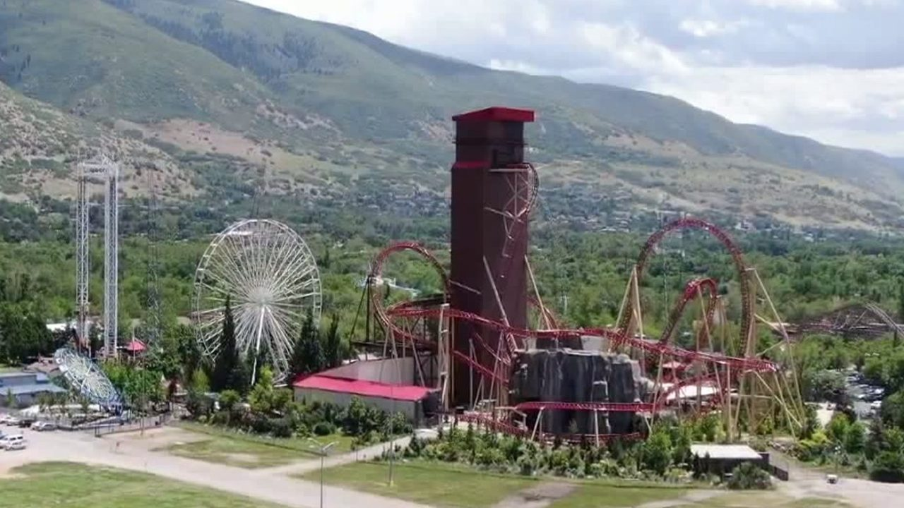
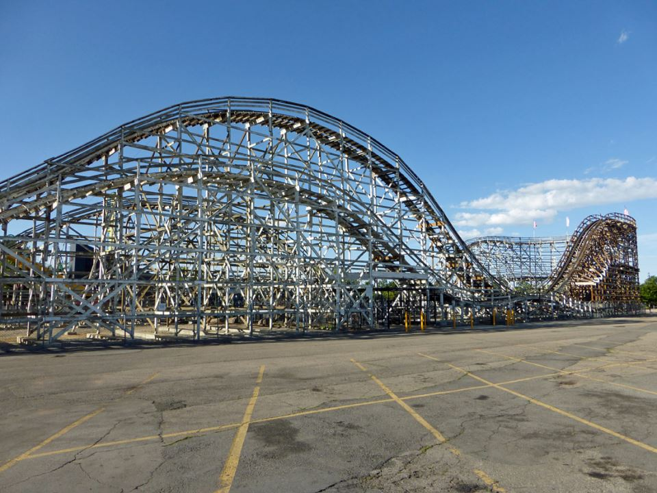

Lagoon Amusement Park is in Farmington, Utah, about 15-20 miles away from salt Lake City, Utah. Lagoon Amusement Park is the home to so many extravagant rides such as Cannibal, Wicked, Colussus: The Fire Dragon, and our historical landmark, Roller Coaster (also known as 'White Roller Coaster').
 
I've been to Lagoon many times. It's the only amusement park we have close to us so it's a good spot to go. My family and I go in the morning, right as the park opens so we can get a full days worth of fun. The park has rides for people of all ages and sizes so no matter if you're a bunch of adults or a couple with six kids, there will be some rides that will fill everyone with joy.